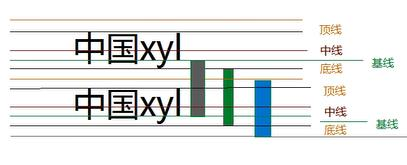

一.浏览器默认样式：
审查元素——computed——show inherited
默认文字大小：16px
默认行高：18px (line-height)
文字大小+上间距+下间距
(官方概念：两条基线之间距离)

二.文字竖直居中
设置 行高=父容器高度
(e.g.行高100-文字20=80————上下间距各40————父容器高度100上下间距40)
三.行高单位
font-size line-height
文字本身 行高赋值 行高值
20px 40px 40px
20px 3em 60px
10px 2em 20px
(em是针对文字所设大小的，
还是用px比较直接直观)
20px 120% 24px
20px 2 40px
当给一个独立的元素设置行高时，
用px 和文字大小无关
其它em、%、不带单位 和文字大小有关
(乘积)
四.盒子嵌套行高关系
父元素字大小————子元素设字大小(以子为主)
父元素行高px————子元素设字不设行高(继承父行高）、
父元素行高em————子元素设字不设行高（继承 父字号*父em）
父元素行高%————子元素设字不设行高（继承 父字号*父%）
父元素行高无单位————子元素设字不设行高（ 子字号*父倍数 ）
当父元素 子元素
设置行高px =父
em =父*父
% =父*父
无单位 =子字号*父